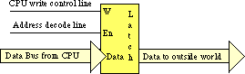
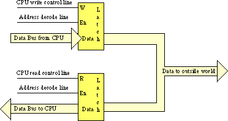

|
Table of Content | |
|
Table of Content | |
| CHAPTER THREE: SYSTEM ORGANIZATION (Part 6) |
| 3.4 -
I/O (Input/Output) 3.5 - Interrupts and Polled I/O |
| 3.4 I/O (Input/Output) |
There are three basic forms of input and output that a typical computer system will use: I/O-mapped I/O, memory-mapped input/output, and direct memory access (DMA). I/O-mapped input/output uses special instructions to transfer data between the computer system and the outside world; memory-mapped I/O uses special memory locations in the normal address space of the CPU to communicate with real-world devices; DMA is a special form of memory-mapped I/O where the peripheral device reads and writes memory without going through the CPU. Each I/O mechanism has its own set of advantages and disadvantages, we will discuss these in this section.
The first thing to learn about the input/output subsystem
is that I/O in a typical computer system is radically different than I/O in a typical high
level programming language. In a real computer system you will rarely find machine
instructions that behave like writeln, printf, or even the x86 Get and Put instructions.
In fact, most input/output instructions behave exactly like the x86's mov
instruction. To send data to an output device, the CPU simply moves that data to a special
memory location (in the I/O address space if I/O-mapped input/output [see "The I/O
Subsystem"] or to an address in the memory address space if using memory-mapped I/O).
To read data from an input device, the CPU simply moves data from the address (I/O or
memory) of that device into the CPU. Other than there are usually more wait states
associated with a typical peripheral device than actual memory, the input or output
operation looks very similar to a memory read or write operation (see "Memory Access
and the System Clock").
An I/O port is a device that looks like a memory cell to the computer but contains connections to the outside world. An I/O port typically uses a latch rather than a flip-flop to implement the memory cell. When the CPU writes to the address associated with the latch, the latch device captures the data and makes it available on a set of wires external to the CPU and memory system:

Note that I/O ports can be read-only, write-only, or read/write. The port in the figure above, for example, is a write-only port. Since the outputs on the latch do not loop back to the CPU's data bus, the CPU cannot read the data the latch contains. Both the address decode and write control lines must be active for the latch to operate; when reading from the latch's address the decode line is active, but the write control line is not.
The figure below shows how to create a read/write input/output port. The data written to the output port loops back to a transparent latch. Whenever the CPU reads the decoded address the read and decode lines are active and this activates the lower latch. This places the data previously written to the output port on the CPU's data bus, allowing the CPU to read that data. A read-only (input) port is simply the lower half of this figure; the system ignores any data written to an input port.

A perfect example of an output port is a parallel printer port. The CPU typically writes an ASCII character to a byte-wide output port that connects to the DB-25F connect on the back of the computer's case. A cable transmits this data to a the printer where an input port (to the printer) receives the data. A processor inside the printer typically converts this ASCII character to a sequence of dots it prints on the paper.
Generally, a given peripheral device will use more than a single I/O port. A typical PC parallel printer interface, for example, uses three ports: a read/write port, an input port, and an output port. The read/write port is the data port (it is read/write to allow the CPU to read the last ASCII character it wrote to the printer port). The input port returns control signals from the printer; these signals indicate whether the printer is ready to accept another character, is off-line, is out of paper, etc. The output port transmits control information to the printer such as whether data is available to print.
To the programmer, the difference between I/O-mapped and
memory-mapped input/output operations is the instruction to use. For memory-mapped I/O,
any instruction that accesses memory can access a memory-mapped I/O port. On the x86, the mov,
add, sub, cmp, and, or, and not instructions can read memory; the mov
and not instructions can write data to memory. I/O-mapped input/output uses
special instructions to access I/O ports. For example, the x86 CPUs use the get
and put instructions, the Intel 80x86 family uses the in and out
instructions. The 80x86 in and out instructions work just like
the mov instruction except they place their address on the I/O address bus
rather than the memory address bus (See "The I/O Subsystem").
Memory-mapped I/O subsystems and I/O-mapped subsystems both require the CPU to move data between the peripheral device and main memory. For example, to input a sequence of ten bytes from an input port and store these bytes into memory the CPU must read each value and store it into memory. For very high-speed I/O devices the CPU may be too slow when processing this data a byte at a time. Such devices generally contain an interface to the CPU's bus so it directly read and write memory. This is known as direct memory access since the peripheral device accesses memory directly, without using the CPU as an intermediary. This often allows the I/O operation to proceed in parallel with other CPU operations, thereby increasing the overall speed of the system. Note, however, that the CPU and DMA device cannot both use the address and data busses at the same time. Therefore, concurrent processing only occurs if the CPU has a cache and is executing code and accessing data found in the cache (so the bus is free). Nevertheless, even if the CPU must halt and wait for the DMA operation to complete, the I/O is still much faster since many of the bus operations during I/O or memory-mapped input/output consist of instruction fetches or I/O port accesses which are not present during DMA operations.
Many I/O devices cannot accept data at an arbitrary rate. For example, a Pentium based PC is capable of sending several million characters a second to a printer, but that printer is (probably) unable to print that many characters each second. Likewise, an input device like a keyboard is unable to provide several million keystrokes per second (since it operates at human speeds, not computer speeds). The CPU needs some mechanism to coordinate data transfer between the computer system and its peripheral devices.
One common way to coordinate data transfer is to provide some status bits in a secondary input port. For example, a one in a single bit in an I/O port can tell the CPU that a printer is ready to accept more data, a zero would indicate that the printer is busy and the CPU should not send new data to the printer. Likewise, a one bit in a different port could tell the CPU that a keystroke from the keyboard is available at the keyboard data port, a zero in that same bit could indicate that no keystroke is available. The CPU can test these bits prior to reading a key from the keyboard or writing a character to the printer.
Assume that the printer data port is memory-mapped to
address 0FFE0h and the printer status port is bit zero of memory-mapped port 0FFE2h. The
following code waits until the printer is ready to accept a byte of data and then it
writes the byte in the L.O. byte of ax to the printer port:
0000: mov bx, [FFE2]
0003: and bx, 1
0006: cmp bx, 0
0009: je 0000
000C: mov [FFE0], ax
. .
. .
. .
The first instruction fetches the data at the status input
port. The second instruction logically ands this value with one to clear bits one through
fifteen and set bit zero to the current status of the printer port. Note that this
produces the value zero in bx if the printer is busy, it produces the value
one in bx if the printer is ready to accept additional data. The third
instruction checks bx to see if it contains zero (i.e., the printer is busy).
If the printer is busy, this program jumps back to location zero and repeats this process
over and over again until the printer status bit is one.
The following code provides an example of reading a keyboard. It presumes that the keyboard status bit is bit zero of address 0FFE6h (zero means no key pressed) and the ASCII code of the key appears at address 0FFE4h when bit zero of location 0FFE6h contains a one:
0000: mov bx, [FFE6]
0003: and bx, 1
0006: cmp bx, 0
0009: je 0000
000C: mov ax, [FFE4]
. .
. .
. .
This type of I/O operation, where the CPU constantly tests a port to see if data is available, is polling, that is, the CPU polls (asks) the port if it has data available or if it is capable of accepting data. Polled I/O is inherently inefficient. Consider what happens in the previous code segment if the user takes ten seconds to press a key on the keyboard - the CPU spins in a loop doing nothing (other than testing the keyboard status port) for those ten seconds.
In early personal computer systems (e.g., the Apple II), this is exactly how a program would read data from the keyboard; when it wanted to read a key from the keyboard it would poll the keyboard status port until a key was available. Such computers could not do other operations while waiting for keystrokes. More importantly, if too much time passes between checking the keyboard status port, the user could press a second key and the first keystroke would be lost.
The solution to this problem is to provide an interrupt mechanism. An interrupt is an external hardware event (like a keypress) that causes the CPU to interrupt the current instruction sequence and call a special interrupt service routine. (ISR). An interrupt service routine typically saves all the registers and flags (so that it doesn't disturb the computation it interrupts), does whatever operation is necessary to handle the source of the interrupt, it restores the registers and flags, and then it resumes execution of the code it interrupted. In many computer systems (e.g., the PC), many I/O devices generate an interrupt whenever they have data available or are able to accept data from the CPU. The ISR quickly processes the request in the background, allowing some other computation to proceed normally in the foreground.
CPUs that support interrupts must provide some mechanism that allows the programmer to specify the address of the ISR to execute when an interrupt occurs. Typically, an interrupt vector is a special memory location that contains the address of the ISR to execute when an interrupt occurs. The x86 CPUs, for example, contain two interrupt vectors: one for a general purpose interrupt and one for a reset interrupt (the reset interrupt corresponds to pressing the reset button on most PCs). The Intel 80x86 family supports up to 256 different interrupt vectors.
After an ISR completes its operation, it generally returns
control to the foreground task with a special "return from interrupt"
instruction. On the x86 the iret (interrupt return) instruction handles this
task. An ISR should always end with this instruction so the ISR can return control to the
program it interrupted.
A typical interrupt-driven input system uses the ISR to read data from an input port and buffer it up whenever data becomes available. The foreground program can read that data from the buffer at its leisure without losing any data from the port. Likewise, a typical interrupt-driven output system (that gets an interrupt whenever the output device is ready to accept more data) can remove data from a buffer whenever the peripheral device is ready to accept new data.
|
Table of Content | |
Chapter Three: System Organization
(Part 6)
26 SEP 1996